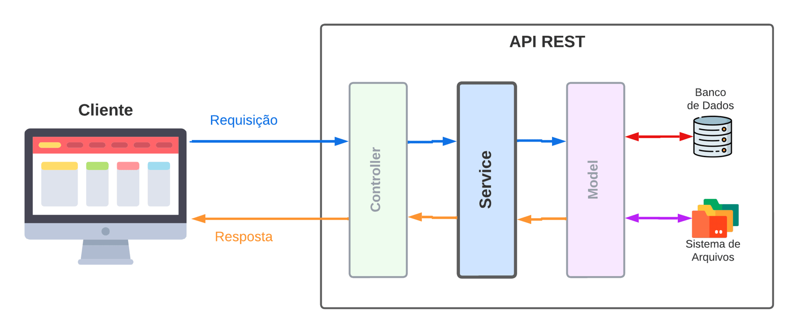

6.8 - Camada Service e as Regras de Negócio
Agora que você já explorou as camadas de Model e Controller na construção da nossa arquitetura de software, vamos dar um passo adiante e entender a camada Service. Esta camada é responsável pela aplicação das regras de negócio, as diretrizes que definem como o sistema deve se comportar em determinadas situações.
A camada Service ocupa uma posição central no fluxo de dados da arquitetura, e a organização de cada camada permite uma comunicação fluida e bem estruturada, com o Service cuidando especificamente da lógica de negócios. A imagem abaixo ilustra a disposição das camadas, destacando a Service como o núcleo de aplicação das regras que agregam valor ao sistema:

Visão geral da Arquitetura em camadas.Limites e Responsabilidades da Camada Service
A camada Service é focada em regras de negócio, que representam as validações e lógicas que o sistema deve seguir para cumprir suas funções. O isolamento das regras de negócio na camada Service ajuda a preservar a clareza e a independência do sistema, minimizando o acoplamento com as tecnologias específicas usadas nas camadas Model e Controller. Esse isolamento possibilita a facilidade de manutenção e a adaptabilidade ao longo do tempo, evitando que as lógicas de negócio fiquem dependentes de frameworks, bancos de dados ou interfaces externas.
Exemplo: Em um sistema bancário, a camada Service gerenciaria a lógica de cálculo de juros para um empréstimo, sem precisar saber como os dados são persistidos na camada Model ou como são apresentados na camada Controller.
O que são Regras de Negócio?
A expressão regras de negócio refere-se às diretrizes que determinam como o sistema deve operar para entregar o valor desejado. As regras de negócio podem ser de dois tipos principais:
- Validações de entrada: verificações de integridade e formato dos dados, como "o nome do produto deve ter no mínimo cinco letras" ou "o CPF não pode conter letras".
- Regras de negócio complexas: restrições que vão além da validação de dados, como "apenas produtos em estoque podem ser vendidos" ou "compras abaixo de R$ 100,00 não podem ser parceladas em mais de cinco vezes".
Anota aí 🖊: O levantamento e a definição das regras de negócio são realizados junto ao
clienteou aosstakeholdersda aplicação. Cada uma dessas regras deve ser documentada e mantida de forma isolada de detalhes técnicos.
Aplicando Regras de Negócio no Sistema de Gestão Escolar
Como exemplo, na API do sistema escolar que estamos desenvolvendo, as regras de negócio podem incluir:
- Verificação de pré-requisitos de disciplina antes da matrícula, garantindo que o aluno concluiu com sucesso disciplinas obrigatórias antes de se matricular em outras avançadas.
- Controle de matrícula em disciplinas, garantindo que o número de vagas não exceda a capacidade máxima de uma turma.
- Regra de atualização de status de aluno, como aprovação ou reprovação automática com base nas notas.
A camada Service, portanto, centraliza essas decisões de lógica e validações específicas, deixando a camada Model focada no acesso ao banco de dados e a Controller dedicada ao fluxo das requisições e respostas HTTP.
Atributos Essenciais da Camada Service
A camada Service, para desempenhar bem suas funções, deve:
- Conter as regras de negócio do sistema, centralizando a lógica principal e qualquer validação complexa que não seja apenas sobre a entrada dos dados.
- Exemplo: No sistema escolar, verificar se um estudante pode ser aprovado com base em suas notas, presença ou pendências financeiras.
- Abstrair regras de negócio do modelo de dados, garantindo que mudanças na estrutura de dados (Model) ou na interface HTTP (Controller) não impactem diretamente a lógica de negócios.
- Exemplo: Determinar se um estudante está qualificado para uma bolsa de estudos com base em suas notas e frequência escolar ao longo do ano letivo.
O que a Camada Service Não Deve Fazer
-
Não deve incluir acessos diretos ao banco de dados, ou seja, não deve conter
queriesSQL ou dependências da camada Model. - Exemplo: A Service não deve buscar um aluno diretamente na tabela, mas pode, sim, solicitar ao Model a busca, aplicando lógica extra, como formatação ou regras de visibilidade.
- Não deve lidar com HTTP: request e response são gerenciados pela camada Controller, que organiza o que é passado à camada Service.
- Exemplo: A Service pode processar a lógica de envio de uma notificação, mas a formatação da resposta HTTP é responsabilidade da Controller.
De olho na dica 👀: Ao centralizar as regras de negócio e isolar a lógica na Service, conseguimos uma estrutura mais organizada, que facilita a manutenção e permite que as camadas Model e Controller se foquem exclusivamente em suas funções.
OBS da IA
Para o SAP CAP
- Regras de negócio no CAP ficam em handlers de serviço:
this.before('CREATE', 'Enrollments', async (req) => { ... req.reject(409, 'SUBJECT_FULL') }). A lógica é a mesma ensinada aqui, só muda o "encaixe".
Minhas anotações
Atalhos: ← → navegar · Ctrl K ou / buscar